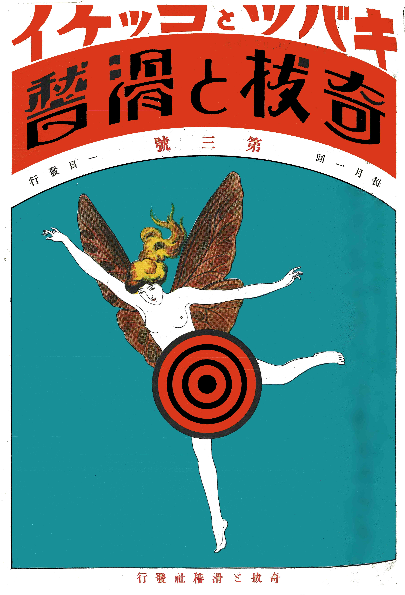

Welcome



Intro
Archives
Redaction
Redacted
The Archives of Censorship in Transwar Japan

Redacted is a major work of original scholarship and a signal critical accomplishment. With impressive daring and persistence, Jonathan Abel has investigated rarely used archives to open a body of materials virtually unknown to English-language readers. This is a stunning achievement, and it is sure to change the landscape of Japanese literary studies.”
— Marilyn Ivy, author of Discourses of the Vanishing: Modernity, Phantasm, Japan
One way to read the book at a glance by a look at wordles (keywords as defined by the frequency of usage and represented in size of font). Click here to read the book at a glance.
Click here to see revealing archival finds.
Redactions come in many forms.
Contact
Link to the book here.